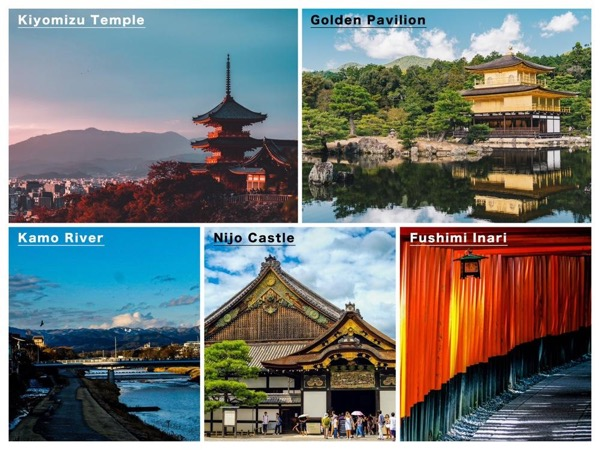

Explore Kyoto, Japan
Price: MYR 5,200 per person
Duration: 6 days, 5 nights
Kyoto, the cultural capital of Japan, is a city of breathtaking temples, serene gardens, and rich traditions. Experience the beauty of cherry blossoms, explore the historic districts, and enjoy authentic Japanese tea ceremonies.
Activities
- Visit Kinkaku-ji, the Golden Pavilion
- Walk through the Arashiyama Bamboo Grove
- Explore the traditional streets of Gion
- Experience a tea ceremony in a historic teahouse
- Hike to Fushimi Inari Shrine’s iconic red torii gates